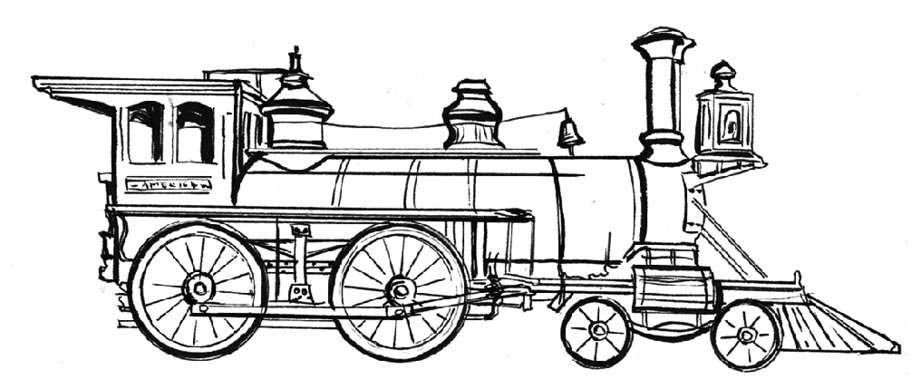

上一章，我们介绍了格林尼治——世界计时中心和本初子午线所在地。但在那之后，我们又等了150年，直至铁路时代的来临，“标准时间”这一概念才真正被人们普遍接受。
铁路运输这一设想最早源于公元前6世纪的古希腊，当时人们用马拉着货物沿轨道行驶。早先，古希腊人在石灰岩上刻了6千米的凹槽，利用这个人工滑道（希腊语为diolkos）进行物品运输（依靠奴隶们推动载有货物的车运行），这种滑道的使用历史长达600多年。使用轨道或凹槽的铁路出现于14世纪，到了16世纪，带有枕木的窄轨铁路才开始在欧洲煤矿中普遍使用。
铁路线最早在英国迅速发展起来。17世纪，人们已经普遍使用木质马车道将煤炭从矿井运往运河，以马为动力的铁路在18世纪开始涌现。工业革命时期，借助蒸汽机的发明，1825年，乔治·斯蒂芬森（George Stephenson）为英国东北部城市斯托克顿（Stockton）和达灵顿（Darlington）的铁路建造了“运动号”（Locomotion）机车，成为世界上第一条面向公众的蒸汽火车铁路。之后，他又建造了从利物浦到曼彻斯特的城际铁路，1830年开始投入运行。
斯蒂芬森建造的蒸汽机车很快就风靡英国、欧洲其他国家和美国。19世纪50年代早期，英国已经拥有7 000英里的铁路轨道。
相比英国，美国国土辽阔，铁路建设更加艰巨，但对于想要开拓西部的商人来说，开通铁路势在必行 [1] 。美国一直密切关注着英国铁路的发展，在19世纪30年代到40年代，开通了第一条小规模铁路。1850年到1890年是美国铁路迅速扩张的时期。在此之后，美国成为拥有地球上三分之一轨道里程的国家。南北战争后，第一条横贯美国大陆的铁路也于1869年顺利完工，第一次将整个国家连在一起。

早期的蒸汽机车
随着铁路建设热潮在欧洲和美国的兴起，人们急需一个标准时间来确保火车高效运行。
1847年12月11日，英国铁路系统首次正式采用格林尼治标准时间，每列火车都配备了一个根据GMT校准的便携式精密计时器。为便于“火车时间”的校准，1852年8月，格林尼治皇家天文台开始通过电报来传递时间信号。
而在美国，铁路系统花了30多年才统一时间，替代了当时美国各个铁路公司各自的时间标准——包括纽约时间、宾夕法尼亚时间、芝加哥时间、杰斐逊市（密苏里州首府）时间和旧金山时间——这么多“地方时”同时使用很容易造成混乱。
1883年10月，美国和加拿大各铁路公司领导人在芝加哥举行会议，同意在美国本土采用4个标准时（现在为5个标准时）。1883年11月18日，所有铁路都根据各自所在时区的标准时重新校准了自己的时钟，但直至1918年，标准时才正式被立法确认。
铁路将标准时带到各地，几年后，除英国邮局继续使用“伦敦时间”直至1872年之外，所有地方都开始采用标准时间。1880年，GMT成为英国的法定时间。
全世界共有24个按经线划分的时区，每个时区都以格林尼治标准时间为参考时间。每一个时区横跨15度经度，同一时区内时间统一，相邻时区间时间相差1小时（以GMT为标准，向西减1小时，向东加1小时）。全球360度经度，总共24个小时。
某些国家和地区在时区和经度界线问题上采取灵活处理。中国和印度是全球人口最多的两个国家，虽然在地域上横跨多个时区，但整个国家都采用统一时间。印度标准时间里还出现了0.5小时 [2] ，加拿大纽芬兰省、伊朗、阿富汗、委内瑞拉、缅甸、马克萨斯群岛和澳大利亚部分地区也是。有些国家和地区甚至还使用0.25小时的时差，例如尼泊尔和查塔姆群岛。
协调世界时（Coordinated Universal Time）简称UTC，基本上是格林尼治平均时间的延续，人们有时候说GMT，有时候说UTC，其实表达的是同一个意思，尤其是对非专业人士而言。由于地球自转的不均匀性和长期变慢性（主要由潮汐摩擦引起），国际天文联合会提出我们需要一个更稳定、更精准的时间，UTC便应运而生。
读者可能会问为什么协调世界时的简写是UTC而非CUT。因为在法语中，协调世界时叫作Temps Universel Coordonné（简写为TUC），所以作为英法两国之间的妥协，协调世界时正式更名为Universal Time Coordinated（英语）或Universel Temps Coordonné（法语），缩写为UTC。然而在英语中，人们通常还是将协调世界时叫作Coordinated Universal Time。
GMT从1972年起渐渐退出历史舞台，UTC成为新的全球官方标准时间。UTC是根据全球49个不同地区的多个原子钟（约260台）时间联合计算而来，这其中运行最精准的当属美国华盛顿特区的美国海军天文台的原子钟。绿树成荫、美丽可爱的格林尼治曾给人地处时间中心的美妙感觉，但UTC无法做到（我曾经居住在格林尼治，所以对此抱有偏见）。
中国时间
理论上讲，幅员辽阔的中华人民共和国横跨了5个时区，但只采用一个时间。官方规定，全国统一时间为GMT+8（或UTC+8）。采用1个而非5个时区的决定是在1949年中华人民共和国成立时由政府做出的。整个中国统一使用北京时间。
虽然出于世俗及行政需要，格林尼治是公认的本初子午线所在地，但还有另外一些“本初子午线”散落在世界各地，其中最有趣的一些本初子午线都跟宗教圣地有关。
直至19世纪晚期，埃及最大、最古老的吉萨金字塔一直是个最明显、最受欢迎的本初子午线所在地。对虔诚的基督徒来说，耶路撒冷的圣墓教堂作为本初子午线也相当受欢迎，但也并没有在全球通行。然而最近，伊斯兰世界的中心——圣城麦加又被推举为新的本初子午线所在地。麦加子午线的标准时间是UTC+02:39:18.2。
推举麦加成为新的本初子午线所在地这一提议来自2008年，穆斯林教职人员在卡塔尔首都多哈举行了一个名为“麦加：地球的中心，理论与实践”的特别会议。2010年8月，位于圣城麦加的世界最大时钟（后文有更多介绍）于穆斯林斋月的第一天正式启用，显示的是麦加时间。事实上，这个时钟最后被用来显示阿拉伯标准时间，以求取代格林尼治标准时间成为新的全球时间标准。
夏令时主要流行于北半球国家，包括欧洲诸国、加拿大、美国、一些非洲和拉丁美洲国家以及南半球的新西兰和澳大利亚东南部地区。早些时候，俄罗斯、中国和印度在内的其他很多国家也曾采用过夏令时。夏令时的基本原理就是在春季人为地将时间提前1小时，到了秋季再推迟1小时回归正常，目的是让白天变长，充分利用光照资源，尤其在夏天。
夏令时最早出现于20世纪初第一次世界大战（以下简称“一战”）期间，由德国及其同盟国 [3] 最先实行，目的是节省煤炭及其他能源。而他们的对手——英法等协约国也觉得这是个好主意并随之实行，后来很多战争外围的中立国也开始采用夏令时。1918年，苏俄和美国也开始采用夏令时。
“一战”后，除英国、法国、爱尔兰和加拿大外，许多国家开始取消夏令时，或只是时断时续地采用。但随着“二战”的到来，夏令时再度风靡。20世纪70年代出现能源危机后，全球又一次兴起春季将时钟调快1小时以减少电力照明消耗燃料的夏令时高峰。